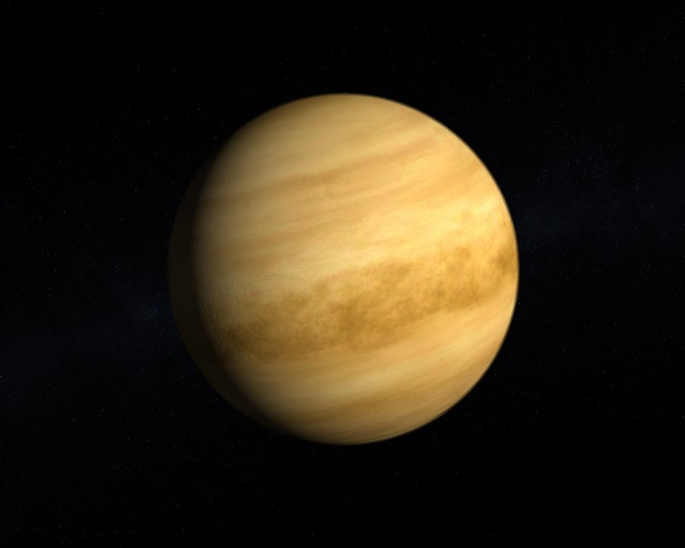

The Venus
Solar System Sun Mercury Venus Earth Mars Jupiter Saturn Uranus Neptune Pluto

Definition

Venus is the second planet from the Sun and the Third brightest object in
Earth's sky after the Sun and Moon, It is sometimes referred to as the
sister planet to Earth, because their size and mass are so similar. Venus is
also the closest planet to Earth. The surface of Venus is hidden by an
opaque layer of clouds which are formed from sulphuric acid.
The planet is named for Venus, the Roman goddes of love and beauty and
is the second largest terrestrial planet.
Facts
-Venus is the second brightest natural object in the sky.
-Venus is sometimes reffered to as the "morning star" and "evening star".
-One day on Venus is longer than one year.
-Venus is named after the Roman goddess of love and beauty.
-Venus is sometimes called Earth's sister planet.
-Venus has no moons nor rings.
-Billions of years ago, the climate of Venus may been similar to that of Earth. 
-Venus rotate in the opposite direction to other planets.
-Venus is the hottest planet in the solar system with an average surface temperature of 462 degrees celsius.
-The temperature on Venus doesn't vary much between the night and day.
-The estimated age of the Venusian surface is around 300-400 million years old.
-The atmospheric pressure of Venus is 92 times stronger than Earth's.
-Venus has a very weak magnetic field.
-Venus is the only planet in the Solar System to be named after a female figure.
-Venus is the closest planet to Earth.
-Venus orbits the sun in an ellipse, but its orbit is the closest to being a circle out of all the planets.
Profile
Mass :4,867,320,000,000,000 billion kg (0.815 x Earth)
Equitorial Diameter :12,104 km
Polar Diameter :12,104 km
Equitorial Circumference :38,025 km
Known Moons :None
Notable Moons :None
Orbit Distance :108,209,475 km (0.73 AU)
Orbit Period :224.70 Earth days
Suface Temperature :462 degrees Celsius
First Recorded :14th Century BC
Recorded by :Babylonian astronomers